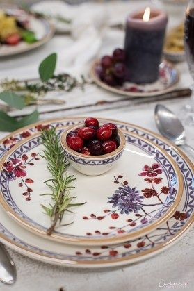
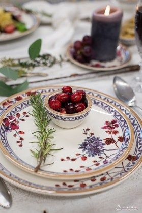

Abendessen-Rezepte - einfach und lecker | DasKochrezept.de
2021.06.24 14:33

Direkt zum Inhalt DasKochrezept.de DasKochrezept.de Rezepte
Kategorien
schnelle Home-Office Rezepte Anlässe und Feiertage Geburtstag Muttertag Grillen Vorspeisen Frühstück und Brunch Pfannkuchen Overnight Oats Smoothie Mittagessen Abendessen Beilagen-Rezepte Backen Pizza Flammkuchen Kuchen Muffins Torten Internationale Küche Rollbraten Rezepte mit Mozzarella: Vorspeisen, Aufläufe und Co. Tortilla-Rezepte: Wraps, Tacos & Co. Sommer Magazin News DasKochrezept.de DasKochrezept.deAbendessen-Rezepte
Schnelle und leckere Rezepte für das Abendessen
Das Abendessen ist für viele die wichtigste Mahlzeit des Tages. Die Familie kommt zusammen, der Tag wird revue passiert und der Genuss steht an oberster Stelle. Ob warm oder kalt, deftig oder low carb, hier findest du all unsere Abendessen Rezepte im Überblick. Es ist für jeden Geschmack etwas dabei.Herzhafter Armer Ritter
Von herzhaftem Armen Ritter hast du noch nie was gehört? Dann solltest du diesen leckeren Snack heute auf jeden Fall mal ausprobieren – wir sind süchtig! Zum Rezept Foto: Great Stock!Sushi für Anfänger
Selbstgemaches Sushi ist mit unserem Rezept für Anfänger kinderleicht! Also trau dich und probier’s aus. Aber aufgepasst: Diese japanische Spezialität macht süchtig. Zum Rezept Foto: FoodcollectionSpaghetti Bolognese Auflauf
Mmmhh, Spaghetti Bolognese als Auflauf: Hallo, neues Lieblingsessen! Die Nudeln werden mit der Hackfleischsoße vermengt und mit einer wunderbaren Béchamelsoße bestrichen. Du wirst nicht genug davon… Zum Rezept Foto: News Life MediaWassermelone mit Feta, Honig & Pinienkernen
Herrlich sommerlich frisch und leicht - so schmeckt diese Vorspeise von den RTL II Kochprofis. Nur ein paar Zutaten und schon fühlt man sich in einen traumhaften Sommerurlaub versetzt. Zum Rezept Foto: Peter Schulte für Tre Torri VerlagTomatensuppe aus frischen Tomaten – gesund & gut
Tomatensuppe aus frischen Tomaten schmeckt fruchtig, ist einfach zu kochen und super gesund! Zu leicht für dich? Dann bitte mit gekochtem Reis aufpeppen! Zum Rezept Foto: dasKochrezept.deInhaltsverzeichnis
Gesundes Abendessen Auf Kohlenhydrate beim Abendessen verzichten Abendessen in anderen KulturenEinfache Spaghetti Bolognese
45 Min.Gefüllte Paprika mit Hackfleisch
20 Min.Risotto aus dem Schnellkochtopf
25 Min.Currywurst selber machen
35 Min.Roastbeef im Ofen gegart
10 Min.Bratkartoffeln
30 Min.Flammkuchen mit Lauch
30 Min.Tafelspitz mit Meerrettichsoße
40 Min.Gebratene Polenta
30 Min.Wurstsalat mit Käse
30 Min.Kartoffelgratin mit Gemüse
40 Min.Bratkartoffeln aus rohen Kartoffeln
30 Min.Kartoffelsalat mit Speck
20 Min.Tomate-Mozzarella-Spießchen
15 Min.Gebratener Reis mit Gemüse und Ei
25 Min.Hummus-Falafel
30 Min.Hackbraten im Bräter
40 Min.Einfacher Nudelsalat
25 Min.Alle Rezepte zum Thema Abendessen
Seitennummerierung
Aktuelle Seite 1 Seite 2 Seite 3 Seite 4 Seite 5 Seite 6 Seite 7 Seite 8 Seite 9 Seite 10 … Nächste Seite Next › Letzte Seite Last »Die einen mögen es deftig und opulent, die anderen kalorienarm und leicht: Beim Abendessen scheiden sich die Geister. Fest steht: Abendessen verbindet. Schon in der Bibel wird die Bedeutung des gemeinsamen Abendmahls betont. Noch heute sitzt in der Regel die ganze Familie um einen Tisch herum. Es werden Erlebnisse ausgetauscht, es wird diskutiert und manchmal gestritten. Aber auch das fördert auf lange Sicht die soziale Kompetenz und den Zusammenhalt.
Wer den Stress des Tages hinter sich lassen will, sollte sich etwas gönnen. Damit sind nicht etwa fettige Speisen gemeint, sondern die Zeit, die man sich für ein gelungenes Abendessen mit Freunden oder Verwandten nimmt. Ein liebevoll gedeckter Tisch mit hübschen Geschirr, Blumen, Servietten und Kerzen erfreut nicht nur das Auge, sondern lässt auch die Gerichte besser zur Geltung kommen.
Suppen- und Eintopf-Rezepte Zur Themenseite
Auflauf Rezepte Zur Themenseite
Hackfleisch-Rezepte Zur Themenseite
Suppen- und Eintopf-Rezepte Zur Themenseite
Auflauf Rezepte Zur Themenseite
Hackfleisch-Rezepte Zur Themenseite
Gesundes Abendessen
Wer tagsüber wenig gegessen hat, neigt abends dazu, richtig reinzuhauen. Aber Achtung: Da wir uns nach dem Abendessen normalerweise nicht mehr viel bewegen, können die Kalorien nicht verbrannt werden.
Unser TippFür alle die ungewollt viel essen
Volle Teller suggerieren unserem Gehirn, es handele sich um eine üppige Mahlzeit – egal, wie groß der Teller ist! Es lohnt sich also, die Portionen in kleinen Schalen anzurichten.
Für eine gesunde Ernährung ist Abendessen im Stehen tabu. Auch der Fernseher und andere elektronische Geräte haben jetzt mal Pause – die ständige Geräusch- und Bilderkulisse lässt uns zu sehr schlingen. Wer jeden Bissen langsam und ausreichend kaut, wird schneller satt.
Generell gilt: Das Abendessen sollte weder zu spät noch zu üppig sein. Leichte Gerichte zwischen 17 und 19 Uhr unterstützen nicht nur die figurbewusste Ernährung, sondern auch einen gesunden Schlaf. Das ist aber nur ein Richtwert. Hauptsache, die letzte Mahlzeit des Tages wird nicht direkt vor dem Schlafengehen eingenommen. Magen und Darm brauchen noch ein wenig Zeit, um die aufgenommene Nahrung zu verdauen und den Stoffwechsel auf den Nachtmodus umzustellen.
Schneller Möhrensalat – warm & kalt ein gesunder Genuss
10 Min.Bunter Salatteller mit Rotkohlstreifen, Himbeeressig- Dressing und gebackener Hirtenkartoffel
50 Min.Schnelles Low Carb Abendessen: Gemüse und Kräuter aus dem Ofen
10 Min.Schneller Möhrensalat – warm & kalt ein gesunder Genuss
10 Min.Bunter Salatteller mit Rotkohlstreifen, Himbeeressig- Dressing und gebackener Hirtenkartoffel
50 Min.Schnelles Low Carb Abendessen: Gemüse und Kräuter aus dem Ofen
10 Min.Auf Kohlenhydrate beim Abendessen verzichten
Der ewige Streitpunkt: Kohlenhydrate am Abend – ja oder nein? Eine eiweißreiche Ernährung am Abend soll laut Ernährungsberatern die Fettverbrennung anregen. Dabei soll nicht nur auf Brot, Kartoffeln, Nudeln und Reis, sondern auch auf Obst verzichtet werden. Fleisch, Fisch, Gemüse, Eier und Käse sind hingegen erlaubt.
Andere Experten meinen jedoch, dass eine geringe Menge an Kohlenhydraten nicht schaden kann. Im Gegenteil verhindert sie, dass vor lauter Hunger zu Chips und Schokolade gegriffen wird. Snacks wie diese treiben nämlich den Blutzuckerspiegel in die Höhe und suggerieren so ein Sättigungsgefühl, das nicht lange anhält. Wer nach dem Abendessen also unbedingt noch etwas naschen will, sollte lieber zu Vollkornkeksen, Gemüsesticks oder Joghurt greifen.
Eiersalat ohne Kohlenhydrate
15 Min.Gemüselasagne ohne Kohlenhydrate
45 Min.Moussaka ohne Kohlenhydrate
40 Min.Eiersalat ohne Kohlenhydrate
15 Min.Gemüselasagne ohne Kohlenhydrate
45 Min.Moussaka ohne Kohlenhydrate
40 Min.Abendessen in anderen Kulturen
Andere Länder, andere Sitten: So, wie die Deutschen an der Tradition des Abendbrots mit Butter und Aufschnitt festhalten, stellt das Abendessen in anderen Teilen dieser Erde ein ebenso festes Ritual dar. Was wo auf den Tisch kommt, ist jedoch völlig verschieden: In Australien und Neuseeland wird abends gern ein großes BBQ veranstaltet, bei dem jeder Gast etwas für den Grill mitbringt. Asiaten treffen sich oft in einer der zahlreichen Garküchen oder an einem Essensstand auf der Straße und teilen sich Nudel- und Reisgerichte, Fleisch und Gemüse, Suppen und Teigfladen. Auch in afrikanischen Ländern wird nicht nur mit der Familie, sondern auch mit Freunden das Abendessen zelebriert. Marokkaner sitzen beispielsweise auf großen Kissen und bedienen sich gemeinschaftlich von Platten mit gegrilltem Gemüse, Couscous und Hühnchen- oder Hackfleisch am Spieß.
In vielen Ländern richtet sich die Zeit des Abendessens nach dem Sonnenstand und der Temperatur. Südländer treffen sich erst in den kühleren Abendstunden zum gemeinsamen Essen. Im skandinavischen Ländern hingegen, wenn die Sonne im Winter bereits nachmittags untergeht, muss die Zubereitung des Abendessens schnell gehen. Ein typisch schwedisches Abendessen besteht zum Beispiel aus Fischstäbchen, Bluwurstgrütze und Preiselbeeren.
BBQ–Hähnchenbrust mit pikanter Glasur
35 Min.Schnelle Thaisuppe
40 Min.Couscous mit Auberginen & Zucchini
30 Min.BBQ–Hähnchenbrust mit pikanter Glasur
35 Min.Schnelle Thaisuppe
40 Min.Couscous mit Auberginen & Zucchini
30 Min. DasKochrezept.de Abendessen-Rezepte - einfach und leckerFußbereichsmenü
Über Uns Impressum Datenschutz NutzungsbedingungenSocial Media Links
Made with in Munich Nach oben- 21 schnelle Rezepte für einen leckeren Feierabend .
- Kochbuch: Schnelles Abendessen | EAT SMARTER
- Schnelles Abendessen | Leckere Kochideen | Kitchen Stories
- Rezepte für ein schnelles Abendessen | Chefkoch.de
- Schnelle Mittagessen - 6 Rezepte unter 30 Minuten • Koch-Mit
- [Schnell & einfach] 3112 leckere Rezepte zum Abendessen .
- Gesunde-Abendessen-Rezepte | Swissmilk
- 2871 leckere Rezepte fürs Abendessen - REWE
- 900+ ABENDESSEN SCHNELL & EINFACH . - Pinterest
- Abendessen-Rezepte - einfach und lecker | DasKochrezept.de
- 21 schnelle Rezepte für einen leckeren Feierabend .
- Kochbuch: Schnelles Abendessen | EAT SMARTER
- Schnelles Abendessen | Leckere Kochideen | Kitchen Stories
- Rezepte für ein schnelles Abendessen | Chefkoch.de
- Schnelle Mittagessen - 6 Rezepte unter 30 Minuten • Koch-Mit
- [Schnell & einfach] 3112 leckere Rezepte zum Abendessen .
- Gesunde-Abendessen-Rezepte | Swissmilk
- 2871 leckere Rezepte fürs Abendessen - REWE
- 900+ ABENDESSEN SCHNELL & EINFACH . - Pinterest
- Abendessen-Rezepte - einfach und lecker | DasKochrezept.de
 
